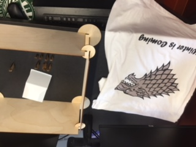

So for my final project, I decided to "recreate" Winterfell from the TV show Game of Thrones. Of course it's a terrible model, but I managed to get the walls, a castle, a T-Shirt as a banner with the Direwolf, and the members of the Stark family.
I used CorelDraw and the T-Shirt Printer for the banner, the Laser Cutter for the walls and members of the family, and the 3D printer for the block that is the castle.
I probably spent about two or three hours on the project, since other people had to make stuff as well.
I used regular settings for everything, nothing needed accomodations for size or anything.
I learned how much fun it is to be making stuff on your own, with no specific instruction other than "make something." I would recommend this class to others.